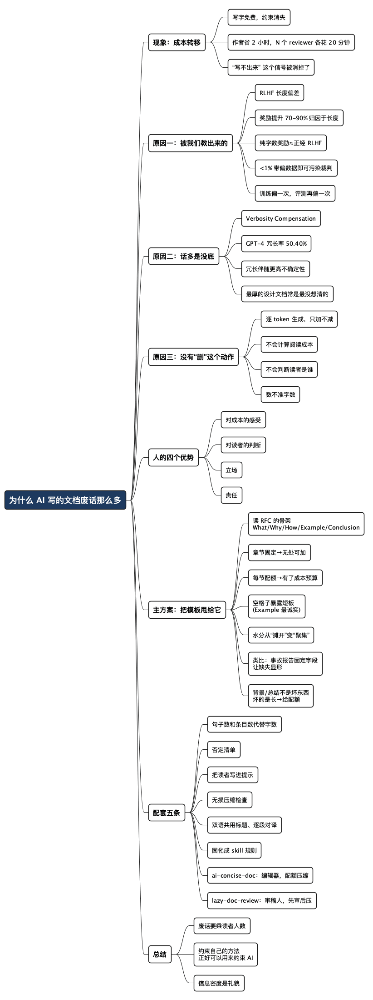

为什么 AI 写的文档废话那么多
Posted on 六 15 8月 2026 in AI
| Abstract | 为什么 AI 写的文档废话那么多 |
|---|---|
| Authors | Walter Fan |
| Category | learning note |
| Version | v1.2 |
| Updated | 2026-08-16 |
| License | CC-BY-NC-ND 4.0 |
为什么 AI 写的文档废话那么多
我做过两年文字秘书，那时候写材料是真的“码字”：一个字一个字敲，三千字能磨掉一整个下午。所以写之前一定会想清楚，因为想不清楚就得重写，重写就是再赔一个下午。
现在爽了。设计文档、操作手册、周报、专利、论文，甩给 AI 一句话，几秒钟二十页。写的人那叫一个舒服。
但你有没有发现一件事：这两年我们收到的文档变厚了，可评审会开得更久了。二十页的设计文档读到最后，你还是不知道这次到底改了什么、风险在哪、要你点头的是哪一条。写的人省了两个小时，十个 reviewer 每人多花二十分钟。
我的观点是：AI 没有消灭废话，它只是把写废话的成本从作者转移给了读者，中间还要乘上一个 N。下面先说这笔账是怎么转移的，再说 AI 啰嗦的三层原因（有一层挺扎心，因为怪不到 AI 头上）。
至于怎么治，我先交底：别跟它讲“简洁一点”，把模板甩给它。我读 RFC 用了十几年的那份 What/Why/How/Example 骨架，是我试过所有招里最省力的一个。
一、写废话的人省力了，读文档的人更累了
“每个字都要我自己敲”这条约束，比任何写作课都管用。因为敲字要成本，你会在动笔前先问“这段有必要吗”；因为改稿要成本，你宁可先想明白。三页写不清楚的方案，逼着你回去把设计想通，而不是扩写到二十页。
AI 把这条约束一刀切断了。写字免费了，于是所有“不确定要不要写”的东西都倾向于被写进去——反正不要钱。这是典型的成本外部化：下决定的人不承担后果。
| 我自己写 | 让 AI 写 | |
|---|---|---|
| 每多写一段的成本 | 我多敲十分钟 | 零 |
| 谁付账 | 作者 | N 个读者 |
| 于是默认动作是 | 删（先加后减） | 加（只加不减） |
| 想不清楚时 | 卡住，被迫想明白 | 照样输出二十页 |
最后一行是我觉得最麻烦的一条。过去文档写不出来是个信号，说明设计还没想通。现在这个信号被 AI 消掉了。文档一直很流畅，方案一直有问题，等到上线才发现。
二、AI 为什么这么啰嗦：三层原因
第一层：它是被我们的评审习惯教出来的
大模型出厂前有一道工序，叫 RLHF（基于人类反馈的强化学习）。说白了就是：让模型生成两个答案，找人来选哪个更好，再训练一个“裁判模型”学会打分，然后逼着模型去追高分。
问题出在裁判上。研究者做过一件很损但很有说服力的实验：把奖励信号换成只看长度——答案越接近目标长度分越高，内容完全不看。结果这个“纯字数奖励”跑出来的下游效果，居然和正经 RLHF 差不多。同一篇工作还测出，PPO 训练带来的奖励提升里有 70%–90% 可以归因于长度（Singhal et al., arXiv:2310.03716）。我们以为在教模型“答得更好”，很大一部分其实是在教它“答得更长”。
裁判为什么这么容易被带偏？因为人类标注数据本身就偏。在那篇论文测的三个数据集上，“无脑选长的那个”这条傻规则命中率是 55.7% / 59.6% / 63.1%——都高于随机的 50%。另有工作发现，往干净的偏好数据里掺不到 1% 的带偏样本，就足以让奖励模型染上明显的格式偏好（arXiv:2409.11704）。偏差还会自我放大：用 LLM 当评委时它同样偏爱长答案，一份“重复列表”式的注水答案能骗过早期 Claude 和 GPT-3.5 约 91% 的判断（Zheng et al., arXiv:2306.05685）。训练偏一次，评测再偏一次，同一个漏洞被利用了两遍。
所以这一层的结论不太好听：AI 啰嗦，是照着我们的样子学的。我们自己评审文档时，看到厚厚一本，第一反应也是“这人挺认真的”。谁把二十页文档当成努力的证据，谁就在给这个偏差投票。
第二层：话多是没底的伪装
人心里没底的时候话会变多——绕圈子、重复提问、把话说满，指望其中一句能蒙对。模型也有这个毛病，学术上叫 Verbosity Compensation（冗长补偿）：在明确要求简洁的前提下，仍然生成可以无损压缩的回答。
这篇工作在 5 个数据集、14 个模型上测下来（arXiv:2411.07858）：
- GPT-4 的冗长补偿出现频率是 50.40%——一半的情况，说了简洁它也做不到；
- 冗长回答和简洁回答的正确率差距，在 Qasper 数据集上高达 27.61%；
- 冗长回答普遍伴随更高的不确定性。
第三条尤其值得记住：啰嗦不是风格问题，是可靠性信号。AI 突然开始铺排“另一方面”“需要综合考虑多种因素”的时候，很可能是它不知道答案。
这跟职场经验完全对得上。我见过的设计文档里，最厚的那几份常常不是想得最深的，而是想得最不清楚的——因为想清楚了三页就够，没想清楚就只能靠背景介绍、行业趋势和名词解释来撑篇幅。人和模型在这一点上是同款毛病，AI 只是把这个毛病规模化了。
第三层：它压根没有“删”这个动作
这一层最本质，也最容易被忽略。人写东西是先加后减：写一版，放一晚，第二天砍掉三分之一。大模型是逐个词往外吐的，吐出去的收不回来，它没有“回头把第二段删掉”这个操作。整篇文章在它眼里不是一份需要整体控制的预算，而是一条越滚越长的链子。
再加上两个它天生缺的东西：
- 对成本的感受。你让它“写详细一点”，它没有任何机制来算“这段多写三百字，读者要多花一分钟”。它不肉疼。
- 对读者的判断。人写文档最省字的地方，恰恰在于知道对方已经知道什么。给同组同事写 RTP 丢包排查，我不会解释什么是 RTP。AI 不知道谁会读，只能按“不了解上下文的读者”铺开，于是每个术语都要解释一遍。
还有个技术细节值得知道：让它“控制在 800 字以内”基本没用。模型看到的是 token 而不是字，生成过程中没法可靠地数自己写了多少字。想约束长度，得换个它数得清的东西——句子数、条目数。
三、人为什么天生写得短
把上面的原因倒过来，就是人的优势。除了已经说过的这两点，还有两条 AI 拿不到：
- 立场：敢写“我认为方案 B，理由三条”，敢删掉那段谁都不得罪的“另一方面”。AI 被训练成“有用、无害、诚实”的老好人，天然倾向于把两边都说一遍。
- 责任：写错要背锅，所以不敢乱写；AI 不背锅，所以什么都敢写、什么都愿意写。
一句话：简洁不是文笔好，是有人为每个字负责。
四、最管用的一招：把模板甩给它
我做双语写作，中英文文档一堆，离开 AI 是不可能的，所以问题不是“用不用”而是“怎么管”。“简洁”对 AI 来说是个形容词，而形容词不可执行，你得把它翻译成可验证的约束。在所有约束里，我用得最久、最省事的一个，是读 RFC 留下的习惯——一份模板。
那份读 RFC 的模板
我读 RFC 有十几年了，读完顺手写摘要，用的一直是这个骨架：
# What
## Abstract
# Why
# How
# Example
# Conclusion
# Reference
当年做这个模板纯粹是为了自己：读完一份 RFC，脑子里一团东西，得有几个格子把它们分开装。没想到现在它成了我治 AI 啰嗦最有效的工具。
我一般这么用：
“按以下模板输出，不要新增或改动任何一级标题。每节的要求：
What 一句话说清这是什么，Abstract 不超过 3 句；
Why 只写要解决的问题和不做的后果，2–3 条；
How 是主体，可以详细，但按机制拆条，不要写通用背景；
Example 必须是可运行/可验证的具体例子，不要伪代码占位；
Conclusion 3 条以内，每条一句话；
Reference 只列我给你的材料，不要编造链接。
任何我没提供的信息，写“待确认”，不要用通用描述填充。”
顺便说一句常见误解：引言、背景、总结不是坏东西，RFC 也有 Abstract。坏的不是“有”，是“长”——一句话能交代的背景别写三段。所以模板里我给它们标了硬上限：Abstract 三句，Conclusion 三条。有位置，但有配额。
模板为什么这么管用
它一次性掐住了前面那三条病根：
| 病根 | 模板怎么治 |
|---|---|
| 只加不减、没有删除键 | 章节固定，它没地方加，只能往格子里塞 |
| 不会计算阅读成本 | 每节配额就是预算，Abstract 三句就是三句 |
| 靠字数掩饰没底 | 空格子暴露短板 |
最后一条我特别喜欢：空着的格子会暴露问题。
Example 一节最诚实。AI 要是对某个机制心里没底，那儿就会冒出“例如可以使用相应的方法进行处理”这种鬼话——你不用读完二十页去找漏洞，盯着那一节问它就行。没模板的文档，问题分散在全文里，你得从头找到尾；有模板的文档，问题会集中暴露在它说不清楚的那一格里。
这跟工程上的做法是一个道理：我们写事故报告要有固定字段（现象 / 影响面 / 根因 / 处理 / 改进项），不是为了好看，是为了让缺失的东西显形。谁都能写一篇感人的事故复盘，但“根因”那一栏空着，是藏不住的。模板对 AI 起的是同一个作用。
配套的五条
模板是承重墙，剩下这几条是补充。
1. 用句子数和条目数代替字数
模型数不准字数，但数得准句子和条目。
- ❌ “控制在 500 字左右，简洁一些”
- ✅ “每节恰好 3 个要点，每个要点不超过 2 句话；结论先写，一句话”
2. 给一份否定清单
正面说“要简洁”太软，反面禁令更硬。我挂在系统提示里的一段：
禁止事项：
- 背景/引言/总结各不超过 3 句，不要展开成段
- 不要复述我的问题
- 不要用“值得注意的是”“综上所述”“至关重要”“需要综合考虑”
- 不要解释我在提示里已经用过的术语
- 能用一句话说清的，不要分三段
- 如果某个信息我没给你，直接标注“待确认”，不要用通用描述填充
3. 把读者写进提示里
既然它不会判断读者是谁，你就手动补：
“读者是熟悉本服务的后端同事，已知 Kubernetes、gRPC、限流的基本概念，不要解释这些。他读这份文档只为回答一个问题：这次改动会不会影响线上 SLA。”
这一条对篇幅的削减效果，往往比任何字数限制都大。
4. 加一道压缩检查
写完不要直接收。开一轮新的，让它当审稿人：
“逐段检查以下文档，标出可以无损压缩的段落（即删掉后不丢失任何信息的部分），给出删除建议和压缩后的版本。不要新增任何内容。”
这一步是把冗长补偿的定义直接拿来当检查项——“可无损压缩”本来就是那篇论文定义 VC 的标准。让模型来找自己的问题，它其实找得挺准，只是默认不删。
5. 双语场景：先定中文骨架，再让它翻译，不要让它重写
我踩过的坑：中文写完让 AI“写一份对应的英文版”，它会顺手重新组织、补充背景、加个 Overview，英文版比中文版长一半，两份对不上号，后面维护是灾难。
有了模板这事就好办了——两份文档共用同一套一级标题，天然对齐。再加一句锁死：
“逐段翻译，保持段落数、小标题、列表条目数完全一致。不要新增章节、过渡句或解释。术语按下表固定译法。”
最后一条元建议：把模板和禁令写进 skill / 规则文件，别每次手打。
每次手打提示词，你一定会偷懒；写成规则文件，它就每次都生效。人的自律不可靠，配置文件可靠。
这套做法我已经拆成两个 skill，放在 lazy-rabbit-skills 里，面向 RFC、设计文档、runbook、周报这类给别人看的成品。两者都不编造事实，缺口标“待确认”，也都不把头脑风暴压成发表级短文。差别在主目标：
ai-concise-doc：编辑器。把“写短一点”变成固定结构、可计数配额、无损删除。压缩时默认保住原标题和顺序；中英对齐翻译也走这一条。lazy-doc-review：审稿人。先当批判性朋友检查事实、推理、受众和语言，再按读者负担改写。结构妨碍理解就可以重排；流畅不等于正确。
怎么选很简单。任务已经是编辑约束——“每节最多三条”“无损压缩，数字和 MUST NOT 都要留”“中英标题对齐”——用前者。任务是让人能读、能判——“同事找不到真正的决策”“别当好好先生”“这段推理通顺，但结论站得住吗”——用后者。
两者叠用时，顺序是先审后压：先 lazy-doc-review 把事实、论证和结构修好，再 ai-concise-doc 做配额压缩或双语对齐。反过来容易把有问题的前提压得更像定论。
欢迎拿真实文档试用，也欢迎反馈触发方式、输出质量和踩到的坑。
想让 AI 写得像人，你得先把人的约束还给它——成本、读者、立场、和删除键。模板是把这四样一次性交出去的最省力的方式。 但有个边界：模板别用在头脑风暴阶段，那时候你要的恰恰是它铺得开、想得杂。要简洁的是给别人看的成品，不是草稿。
总结：约束自己的方法，正好可以用来约束 AI
你多写的每一页，都要乘上读者的人数。一份发给五十人的操作手册，一段没用的废话浪费的是五十份注意力，而写的人只按了一次回车。以前我们不舍得写废话，是因为敲字太累；现在写字免费了，克制就得变成一件刻意做的事。
写这篇文章我自己有个意外收获。当年做那份 RFC 模板，纯粹是为了给脑子里那团东西找几个格子装，十几年后它成了我管住 AI 最好用的缰绳。这大概是个通用规律——那些当年为了约束自己而做的东西，现在正好用来约束 AI。格子还是那几个格子，只是往里填字的换了个人。
所以别急着找什么新的提示词技巧，先翻翻你自己的抽屉。
全文思维导图
@startmindmap
<style>
mindmapDiagram {
node {
BackgroundColor #F8F9FA
RoundCorner 10
Padding 10
FontSize 13
}
:depth(0) {
BackgroundColor #1E3A5F
FontColor white
FontSize 18
FontStyle bold
}
:depth(1) {
FontSize 15
FontStyle bold
}
:depth(2) {
FontSize 13
}
}
</style>
* 为什么 AI 写的文档废话那么多
** 现象：成本转移
*** 写字免费，约束消失
*** 作者省 2 小时，N 个 reviewer 各花 20 分钟
*** “写不出来” 这个信号被消掉了
** 原因一：被我们教出来的
*** RLHF 长度偏差
*** 奖励提升 70-90% 归因于长度
*** 纯字数奖励≈正经 RLHF
*** <1% 带偏数据即可污染裁判
*** 训练偏一次，评测再偏一次
** 原因二：话多是没底
*** Verbosity Compensation
*** GPT-4 冗长率 50.40%
*** 冗长伴随更高不确定性
*** 最厚的设计文档常是最没想清的
** 原因三：没有“删”这个动作
*** 逐 token 生成，只加不减
*** 不会计算阅读成本
*** 不会判断读者是谁
*** 数不准字数
** 人的四个优势
*** 对成本的感受
*** 对读者的判断
*** 立场
*** 责任
** 主方案：把模板甩给它
*** 读 RFC 的骨架\nWhat/Why/How/Example/Conclusion
*** 章节固定→无处可加
*** 每节配额→有了成本预算
*** 空格子暴露短板\n(Example 最诚实)
*** 水分从“摊开”变“聚集”
*** 类比：事故报告固定字段\n让缺失显形
*** 背景/总结不是坏东西\n坏的是长→给配额
** 配套五条
*** 句子数和条目数代替字数
*** 否定清单
*** 把读者写进提示
*** 无损压缩检查
*** 双语共用标题、逐段对译
*** 固化成 skill 规则
*** ai-concise-doc：编辑器，配额压缩
*** lazy-doc-review：审稿人，先审后压
** 总结
*** 废话要乘读者人数
*** 约束自己的方法\n正好可以用来约束 AI
*** 信息密度是礼貌
@endmindmap

行动清单
今天就能做的几件事：
- 翻出你手上现成的模板——读书笔记的、事故报告的、周报的、评审的。你可能已经有治 AI 啰嗦的工具了，只是从来没把它甩给 AI 用过。给每节加一句配额（几句、几条），就能直接上工。
- 找出最近一份 AI 生成的文档，跑一遍“无损压缩”提示，看看能砍掉百分之几。砍掉 30% 以上很常见。
- 试用 lazy-rabbit-skills 里的
ai-concise-doc和lazy-doc-review，拿真实 RFC 或设计文档试，踩到坑请反馈。 - 下次评审别人的文档，把“厚”从加分项里划掉。这个偏差最初就是从我们这儿来的。
本作品采用知识共享署名-非商业性使用-禁止演绎 4.0 国际许可协议进行许可。 欢迎在我的个人网站 https://www.fanyamin.com 访问原文并评论。